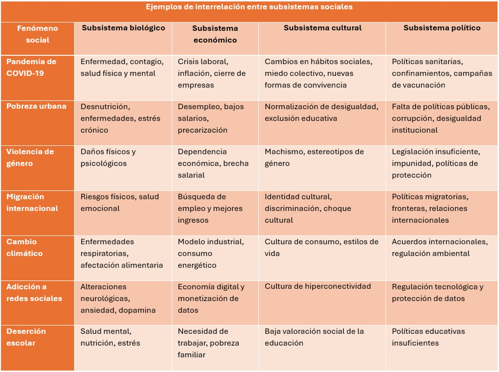
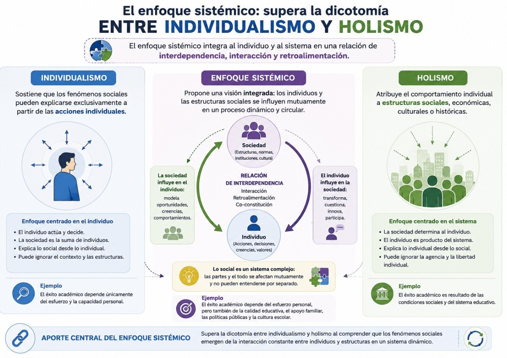
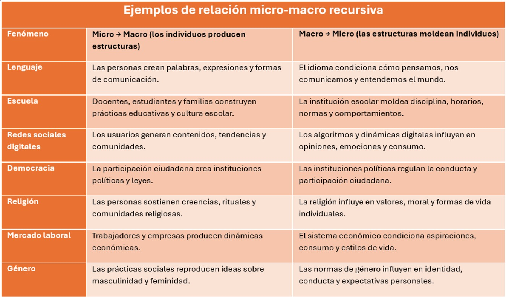
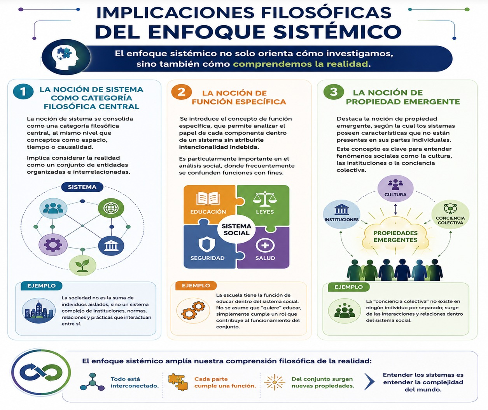
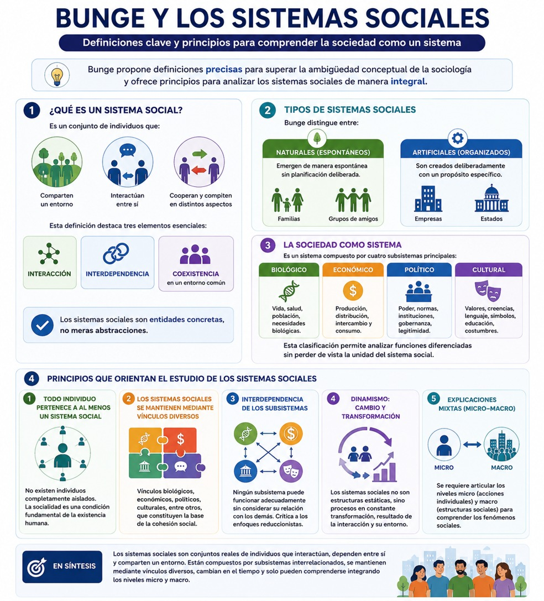
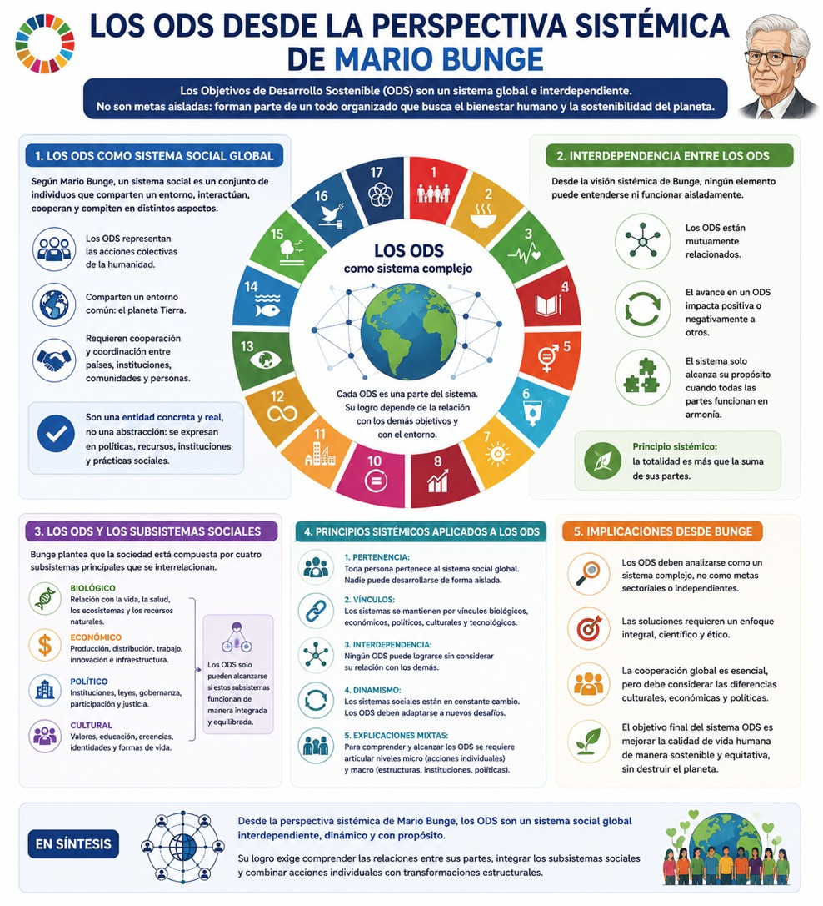

El enfoque sistémico tiene profundas implicaciones para el análisis de la realidad contemporánea. Al reconocer la interdependencia y la complejidad, permite abordar problemas que no pueden resolverse desde perspectivas fragmentadas.
En sistemas sociales, por ejemplo, esta perspectiva facilita el análisis de instituciones, organizaciones y procesos colectivos, considerando tanto sus estructuras internas como sus relaciones con el entorno. Asimismo, permite comprender cómo las transformaciones en un subsistema pueden generar efectos en otros.
La teoría también contribuye a integrar distintos niveles de análisis, desde lo micro hasta lo macro, lo que resulta fundamental para estudiar fenómenos complejos como la globalización, las crisis económicas o ecológicas, cambios culturales, poblacionales, etc.
Te recomendamos ver estos videos para profundizar sobre este tema:
Sistemas socioculturales y sistemas simbólicos.
El enfoque sistémico aplicado al estudio de la sociedad constituye una de las contribuciones más relevantes de la epistemología contemporánea. En Sistemas sociales y filosofía, Mario Bunge propone una perspectiva que supera la oposición entre individualismo metodológico y holismo, articulando ambos niveles en una concepción integradora de los fenómenos sociales. Este enfoque no solo redefine la noción de sistema social, sino que también introduce herramientas analíticas para comprender la complejidad del mundo social.
El enfoque sistémico parte de una premisa fundamental: todos los objetos, incluidos los sociales, son sistemas o componentes de sistemas. Esta idea rompe con las visiones atomistas o individualistas que conciben la realidad como una suma de elementos independientes, así como con las perspectivas holistas que privilegian las totalidades sin atender a sus componentes.
En el ámbito social, este enfoque implica que la sociedad no es un agregado de individuos, sino una estructura organizada de relaciones. Los fenómenos sociales deben analizarse considerando simultáneamente su composición (individuos), su entorno (condiciones externas) y su estructura (relaciones entre componentes).
El enfoque sistémico también rechaza las aproximaciones sectoriales. Según Bunge, los subsistemas sociales (biológico, económico, cultural y político) están interconectados, por lo que no pueden estudiarse de manera aislada sin incurrir en errores analíticos. Esta interdependencia implica que cualquier fenómeno social es resultado de múltiples factores que interactúan entre sí. En la siguiente tabla te ofrecemos algunos ejemplos de lo que estas interconexiones implican:

Asimismo, el enfoque sistémico tiene un carácter metodológico más que dogmático. No sustituye la investigación empírica, sino que orienta la formulación de problemas y la construcción de modelos. En este sentido, se presenta como una herramienta heurística que permite abordar la complejidad del mundo social sin reducirla.
Uno de los aportes centrales del enfoque sistémico es la superación de la dicotomía entre individualismo y holismo. El primero sostiene que los fenómenos sociales pueden explicarse exclusivamente a partir de las acciones individuales, mientras que el segundo atribuye el comportamiento individual a estructuras sociales. Observa los ejemplos del siguiente diagrama:

Bunge critica ambas posiciones por su carácter unilateral. El individualismo, al centrarse únicamente en los individuos, ignora el contexto social que condiciona sus acciones. Por su parte, el holismo tiende a diluir al individuo en estructuras abstractas, perdiendo de vista su papel activo en la producción de lo social.
El enfoque sistémico propone una estrategia mixta, que articula los niveles micro y macro. Esto implica reconocer que:
- . Los sistemas sociales están compuestos por individuos.
- . Las acciones individuales están condicionadas por estructuras sociales.
- . Los sistemas sociales influyen en los individuos, pero también son transformados por ellos.
En este sentido, la relación micro-macro es recursiva: los individuos producen sistemas sociales, y estos, a su vez, moldean el comportamiento individual. Esta perspectiva permite comprender fenómenos complejos como la institucionalización, el cambio social y la reproducción de estructuras. En la siguiente tabla te presentamos ejemplos de las relaciones recursivas entre lo micro y lo macrosocial:

Además, Bunge subraya que no es posible reducir completamente un nivel al otro. La sociedad no puede explicarse únicamente como suma de individuos, ni los individuos pueden entenderse sin referencia a los sistemas sociales en los que están insertos. Por ello, el análisis de los sistemas sociales debe integrar ambos niveles de manera coherente.
Como puedes ver en el siguiente diagrama el enfoque sistémico no solo tiene implicaciones metodológicas, sino también filosóficas. Entre las principales implicaciones filosóficas que identifica Bunge destacan varias categorías fundamentales:
1. La noción de sistema se consolida como una categoría filosófica central, al mismo nivel que conceptos como espacio, tiempo o causalidad. Esta noción implica considerar la realidad como un conjunto de entidades organizadas e interrelacionadas.
2. Se introduce el concepto de función específica, que permite analizar el papel de cada componente dentro de un sistema sin atribuirle intencionalidad indebida. Esto es particularmente importante en el análisis social, donde frecuentemente se confunden funciones con fines.
3. Destaca la noción de propiedad emergente, según la cual los sistemas poseen características que no están presentes en sus partes individuales. Este concepto es clave para entender fenómenos sociales como la cultura, las instituciones o la conciencia colectiva.

Asimismo, el enfoque sistémico incorpora la idea de niveles de organización, que permite analizar la realidad en distintos estratos (micro, meso, macro). Esta perspectiva facilita la comprensión de la complejidad social al reconocer la existencia de múltiples escalas de análisis.
Finalmente, el enfoque sistémico promueve una visión realista y materialista de la sociedad, rechazando tanto el reduccionismo como el relativismo extremo. En este sentido, ofrece una base filosófica sólida para el estudio científico de lo social.
Bunge establece una serie de definiciones clave para el análisis de los sistemas sociales. Estas definiciones buscan superar la ambigüedad conceptual que caracteriza a muchas teorías sociológicas.
Un sistema social se define como un conjunto de individuos que:
- • Comparten un entorno,
- • Interactúan entre sí,
- • Cooperan y compiten en distintos aspectos.
Esta definición destaca tres elementos esenciales: interacción, interdependencia y coexistencia en un entorno común. Además, subraya que los sistemas sociales son entidades concretas, no meras abstracciones.
Bunge distingue también entre sistemas sociales naturales (espontáneos) y artificiales (organizados). Los primeros emergen de manera espontánea, como las familias o los grupos de amigos, mientras que los segundos son creados deliberadamente, como las empresas o los Estados.
Otra definición importante es la de sociedad como un sistema compuesto por cuatro subsistemas principales: biológico, económico, político y cultural. Esta clasificación permite analizar la sociedad en términos de funciones diferenciadas, sin perder de vista su unidad.
A partir de estas definiciones, Bunge enuncia una serie de principios que orientan el estudio de los sistemas sociales:
1. El primer principio establece que toda persona pertenece al menos a un sistema social. Esto implica que no existen personas completamente aisladas, y que la socialidad es una condición fundamental de la existencia humana.
2. El segundo principio señala que los sistemas sociales se mantienen mediante diversos tipos de vínculos: biológicos, económicos, políticos, culturales, entre otros. Estos vínculos constituyen la base de la cohesión social.
3. Un tercer principio, implícito en el enfoque sistémico, es la interdependencia de los subsistemas. Ningún subsistema puede funcionar adecuadamente sin considerar su relación con los demás. Esto refuerza la crítica a los enfoques reduccionistas y sectoriales.
Además, los sistemas sociales se caracterizan por su dinamismo. No son estructuras estáticas, sino procesos en constante transformación, resultado de la interacción entre sus componentes y su entorno.
Finalmente, el enfoque sistémico enfatiza la necesidad de utilizar explicaciones mixtas (micro-macro) para comprender los fenómenos sociales. Este principio metodológico refleja la complejidad inherente a los sistemas sociales. Estos principios y características los puedes ver en el siguiente diagrama:

- Bunge, Mario (1999). El enfoque sistémico del mundo social, Sistemas sociales y filosofía. Argentina: Sudamericana.
Te recomendamos ver este video para profundizar sobre este tema:
Los ODS como sistemas complejos
En la UCA que cursaste el semestre pasado revisaste qué son los Objetivos de Desarrollo Sostenible, ahora revisaremos los ODS desde una perspectiva sistémica. Desde esta perspectiva los ODS constituyen un sistema compuesto por 17 objetivos, 169 metas y múltiples indicadores, organizados en torno a dimensiones económicas, sociales, ambientales e institucionales. Cada objetivo puede ser entendido como un subsistema con funciones específicas, pero estrechamente vinculado a los demás.
Siguiendo la lógica de Ludwig von Bertalanffy, los ODS configuran un sistema abierto, ya que interactúan constantemente con su entorno global: economías nacionales, ecosistemas, culturas y estructuras políticas. Esta apertura implica que su comportamiento no puede explicarse únicamente desde su diseño interno, sino que depende de múltiples factores externos.
Además, los ODS operan en distintos niveles:
- Nivel micro: individuos y comunidades.
- Nivel meso: instituciones, organizaciones y políticas públicas.
- Nivel macro: sistemas globales y gobernanza internacional.
Esta estructura multinivel refleja la complejidad del sistema, en el que los cambios en un nivel pueden generar efectos en los demás.
Una de las características más relevantes de los ODS es su interdependencia. Los objetivos no son independientes, sino que están conectados mediante relaciones de sinergia y conflicto. Por ejemplo, el avance en educación (ODS 4) puede contribuir a la reducción de la pobreza (ODS 1), mientras que el crecimiento económico (ODS 8) puede entrar en tensión con la sostenibilidad ambiental (ODS 13).
Desde la perspectiva del pensamiento complejo de Edgar Morin, esta interdependencia implica que los ODS deben analizarse como un tejido de relaciones, donde cada elemento influye en los demás. Esta red de interacciones genera propiedades emergentes que no pueden reducirse a los objetivos individuales. Asimismo, la interdependencia introduce la posibilidad de efectos no intencionales. Políticas diseñadas para avanzar en un objetivo pueden tener consecuencias negativas en otros, lo que exige un enfoque integrado en la toma de decisiones.
Además, el sistema de los ODS presenta dinámicas no lineales, donde las relaciones causa-efecto no son proporcionales ni previsibles. Pequeñas intervenciones pueden generar grandes impactos, mientras que grandes inversiones pueden producir resultados limitados.
La noción de retroalimentación, central en la Cibernética, permite comprender estas dinámicas. Existen bucles de retroalimentación positiva, que amplifican los cambios (por ejemplo, la innovación tecnológica), y negativa, que estabilizan el sistema (como las regulaciones ambientales).
Estas dinámicas hacen que el sistema de los ODS sea altamente sensible a las condiciones iniciales y a las interacciones entre sus componentes. Por ello, la planificación lineal resulta insuficiente para abordar su complejidad.
Como hemos visto, uno de los rasgos distintivos de los sistemas complejos es la emergencia, es decir, la aparición de propiedades que no pueden explicarse a partir de los elementos individuales. En el caso de los ODS, la sostenibilidad misma puede entenderse como una propiedad emergente del sistema.
Siguiendo a Mario Bunge, las propiedades emergentes surgen de la organización y las relaciones entre los componentes. En este sentido, el logro de los ODS no depende únicamente del cumplimiento de cada objetivo, sino de la coherencia del sistema en su conjunto. La emergencia también se manifiesta en fenómenos como la resiliencia, la capacidad del sistema para adaptarse a perturbaciones. Esta propiedad es clave en un contexto de crisis globales como el cambio climático o las pandemias.
La complejidad de los ODS implica un alto grado de incertidumbre. No es posible predecir con precisión los resultados de las políticas, debido a la multiplicidad de variables y a las interacciones no lineales. En este contexto, la gobernanza de los ODS requiere enfoques adaptativos y flexibles. La toma de decisiones debe basarse en el aprendizaje continuo, la participación de múltiples actores y la integración de distintos niveles de conocimiento.
Además, la complejidad plantea desafíos éticos y políticos. La interdependencia global implica que las acciones de un país pueden afectar a otros, lo que exige mecanismos de cooperación internacional. La Organización de las Naciones Unidas juega un papel central en este proceso, aunque enfrenta limitaciones en términos de coordinación y cumplimiento.
Los ODS pueden entenderse también como un sistema socioecológico, en el que las dimensiones sociales y ambientales están profundamente interconectadas. Este enfoque reconoce que la sostenibilidad no puede alcanzarse sin integrar ambas dimensiones. Por ejemplo, la conservación de ecosistemas (ODS 15) está vinculada con la seguridad alimentaria (ODS 2) y la salud (ODS 3). Esta interdependencia refuerza la necesidad de enfoques integrados que superen la fragmentación disciplinaria.
Desde la perspectiva de la complejidad, los sistemas socioecológicos son adaptativos y coevolutivos, lo que implica que las sociedades y los ecosistemas evolucionan conjuntamente. Analizar los ODS como sistema complejo tiene importantes implicaciones metodológicas. En primer lugar, requiere el uso de modelos integrados que consideren múltiples variables y niveles de análisis. En segundo lugar, implica la necesidad de enfoques interdisciplinarios, que integren conocimientos de distintas áreas. La complejidad de los ODS no puede abordarse desde una sola disciplina. Finalmente, el enfoque complejo promueve una actitud reflexiva, consciente de los límites del conocimiento. Esto implica reconocer la incertidumbre y evitar soluciones simplistas como lo muestra el siguiente diagrama:

Si bien los ODS representan uno de los principales marcos globales para enfrentar problemas contemporáneos como la pobreza, la desigualdad, la crisis climática y la exclusión social existen algunas perspectivas críticas desde las cuales han surgido cuestionamientos sobre sus fundamentos epistemológicos, políticos y civilizatorios. Vamos a revisar algunos.
Por ejemplo, algunas de las críticas destacan que los ODS continúan reproduciendo lógicas eurocéntricas y paradigmas de desarrollo vinculados históricamente al capitalismo global y a la colonialidad del poder. Revisemos de qué se tratan esas críticas.
Uno de los principales cuestionamientos a los ODS es que mantienen una visión universalista del desarrollo que invisibiliza las experiencias históricas y epistemológicas de los pueblos del sur global. Inspirado en autores como Aníbal Quijano, Boaventura de Sousa Santos y Walter Mignolo, el texto sostiene que el modelo de desarrollo contemporáneo continúa marcado por relaciones de colonialidad, donde Europa y Occidente siguen funcionando como referentes universales del conocimiento y del progreso.
En este sentido, la Agenda 2030 es criticada porque, aunque promueve la sostenibilidad y los derechos humanos, no cuestiona de manera estructural el sistema económico global responsable de muchas de las desigualdades y crisis ambientales actuales. El capitalismo, basado en la acumulación, el extractivismo y la explotación intensiva de la naturaleza, aparece como un modelo incompatible con la sostenibilidad planetaria.
Además, se subraya que los problemas contemporáneos como el cambio climático, pérdida de biodiversidad, violencia estructural y amenaza nuclear, son resultado de una racionalidad moderna que separó al ser humano de la naturaleza y privilegió el crecimiento económico por encima del equilibrio ecológico. Desde esta perspectiva, los ODS resultan insuficientes si no transforman radicalmente las bases epistemológicas y económicas del sistema-mundo.
Más allá de ello, desde una perspectiva decolonial basada en las epistemologías del Sur se reconoce la existencia de múltiples formas de conocimiento históricamente excluidas por la ciencia occidental moderna, como los saberes indígenas, comunitarios, espirituales y ancestrales. Siguiendo a Boaventura de Sousa Santos, más allá que seguir un solo modelo de desarrollo habría que tomar en cuenta una ecología de saberes, entendida como un diálogo horizontal entre diferentes formas de conocimiento. Esto implica rechazar jerarquías epistemológicas que colocan a la ciencia occidental como única forma legítima de comprender el mundo y por ende, su forma de comprender el desarrollo.
Con ello, la crítica central consiste en que los ODS, aunque hablan de inclusión y diversidad, continúan sustentándose principalmente en marcos tecnocráticos y economicistas. En contraste, las epistemologías del Sur que proponen reconocer que ninguna teoría o cosmovisión posee una verdad absoluta, ya que todo conocimiento es parcial y situado. En este contexto, la transdisciplinariedad aparece como una herramienta fundamental para abordar la complejidad de los problemas globales.
Finalmente, los críticos proponen que se reflexione sobre el carácter universalista de los ODS, ya que aunque la Agenda 2030 pretende ser global, no todas las sociedades conciben el bienestar, el desarrollo o la relación con la naturaleza de la misma manera. Por lo que, imponer modelos homogéneos puede reproducir formas de dominación cultural.
Así pues, desde una visión decolonial, resulta necesario reconocer la pluralidad de formas de vida y de organización social por lo que es necesario pensar el desarrollo desde las experiencias de los pueblos subalternos de África, América Latina y Asia. Esto, a su vez supone, cuestionar las narrativas hegemónicas del progreso y abrir espacio para otros horizontes civilizatorios reivindicando conceptos provenientes de cosmovisiones indígenas, como la relación armónica con la Pachamama, para pensar alternativas al modelo de desarrollo occidental. De este modo, desde estas perspectivas se propone colocar la vida comunitaria y el equilibrio ecológico por encima de la lógica de acumulación capitalista. Te presentamos también esta visión crítica a los ODS para que amplies la perspectiva con la que los abordas y siempre tomes en cuenta la realidad latinoamericana, mexicana y de tu localidad para que tu reflexión sea más abarcadora y contemples la complejidad de hacerlos operativos desde nuestras propias realidades, además de que este tema fortalece el conocimiento adquirido en la UCA de Desarrollo Sostenible, Equidad y Responsabilidad Social, particularmente en lo que concierne a territorializar la universidad y tu experiencia como universitaria o universitario.
- Collado, Javier (2016). Epistemología del Sur: una visión descolonial a los Objetivos de Desarrollo Sostenible. Sankofa. Revista de História da África e de Estudos da Diáspora Africana Ano IX, NºXVII, agosto.
Te recomendamos ver estos videos para profundizar sobre este tema: